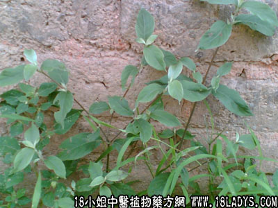

土牛七(中药材植物名:兰草)(植物科目:菊科)

别名：多须公、六月雪。
植物名：兰草。
生长环境：本品为一年生草本，为疏树林下或旷地上常见的野草。
分布：我国南部和西南各省出产，广东北部至南部以及海南均很常见。
入药部分：根部。
采集期：全年。
自采地点：山岗。
性味：性味、味微苦、有榄香气。
功能：清热、去骨火。
主治、用量和用法：1、白喉：干用5钱至1两，清水煎服；2、外感发热：用法同上。
验方1：（防治白喉方）土牛七、篱栏、水瓜叶，上三药每味3至5钱，用水两碗，煎成半碗，作一次服，连服三日为一疗程，或单用土牛七煎服亦有防治之效。
（方解）篱栏味微苦，性凉，清利咽喉，退热，治赤眼；水瓜叶清肝肺热；土牛七清肺家实热。三药对喉科热病，已为民间常用，效果甚著。
查白喉为肺胃感受热毒所致，本方清肺胃热毒，故未病可防，已病可治。
（方歌）白喉防治土牛七，肺胃热毒服之吉，益以篱栏水瓜叶，连服三天勿疏忽。
验方2：（治苦伤胸翳方）土牛七5钱、牛大力5钱、白花苦灯笼5钱、五爪龙5钱、红菱蔃5钱、血见愁5钱、清水四碗，煎成一碗服。
（方解）本方土牛七苦以泄热；五爪龙、白花苦灯笼开胸化气；牛大力、红菱蔃疗肺理金；血见愁去瘀生新。对于肉体与精神过度疲劳而致之胸翳，有化气解郁作用。
（方歌）苦伤胸翳用此方，爪龙大力红菱帮，土牛七与苦灯笼，再加血见愁煎汤。
禁忌：孕妇忌用。
参考资料：《广州常用草药验方集解》荔湾区防疫站介绍，土牛七根防御白喉经验：土牛七根一味，8岁以下每天使用干根3钱，8岁以上每天使用干根5钱、清水二碗，就煎成一碗，口服。连服4天为一个疗程。该区防疫站在连续发现白喉患者9例和带菌者8例的集体单位1571人中，使用上法作预防观察，结果只有未服足疗程的3人发病，而服足整个疗程的，均未有发病。证明以本品预防白喉。有一定效果。
（方解）土牛七，古名曲节草、六月霜，主治发背疮，消痈肿毒，及治伤寒时疫。近代又称为小罗伞，治跌打劳伤、淋病、关节炎、肝硬化等。最近又发现其防治白喉有效。据文献报告，本品为菊科植物，名兰草，含有生物碱及胆留醇。其形态科属，都有别于淮牛七、云牛七等。其作用为清热解毒。白喉乃肺胃火毒上升咽喉而成，预防或治疗时使用本品，可清其肺胃火毒，故未病可防，已病可治。
（方歌）土牛七根防白喉，二碗煎成半碗收，连服四天足药力，白喉从此去悠悠。
《广东中医》（1958年7期）佛山专区第二人民医院小儿科报导：以土牛七加桑菖汤治疗白喉148例，治愈率为80.27%，在治愈例中，平均退热时期为2.92日，临床治愈平均为6.84日，肯定了土牛七对白喉有疗效。
处方：土牛七根3钱、桑叶3钱、木通2钱、淡竹叶2钱、银花2钱、甘草钱半、川贝2钱、薄荷钱半（后下）、枇杷叶2钱、瓜蒌皮2钱、莴根3钱、水三碗，煎至一碗，分三次服。其渣再煎，同法给服，为一昼夜量。
《广东中医》（1961年2期）北街人民医院介绍使用土牛七复方煎剂治疗956名白喉病例，其中甲组（无麻疹因素影响的）601例，治愈率达90.18%，死亡率9.82%，乙丙两组麻疹治疗后白喉为173例和182例，治愈率分别为79.2%和76.93%。
处方一：（土牛七桑莴汤）土牛七、莴根各2钱、木通、淡竹、艮花、枇杷叶、川贝、瓜蒌皮各1钱5分，甘草、薄荷（后下）各1钱、桑叶2钱。
处方二：（土牛七养阴清肺汤）土牛七5钱、生地3钱、元参2钱5分、开冬2钱、白芍、天冬、丹皮、川贝、桑叶各1钱2分，甘草、薄荷（后下）各6分。
《广东中医》内记载：土牛七有中和白喉杆菌毒素的作用，有清凉解毒作用。自制土牛七注射液治疗白喉48例，肌注组治愈率68%，静注组治愈率为91.3%，未见注后产生不良副作用，治疗日期越早越好。
《广州市中医验方选集第一集》珠光卫生所介绍治肝硬化水肿验方：土牛七草一握，水煎，饭前日服2次，甚有功效。
据《药材学》记载，牛七有数种：
1、苋科植物牛七的平燥根。
2、川牛七：四川南川药物种植坊鉴定为苋科植物的干燥根。
3、土牛七：与牛七是同种植物，野生于江苏等地。
4、云牛七：是苋科植物，昆明土牛七的干燥根。
5、广东土牛七：为菊科植物兰草的干燥根。据研究报告，认为本品含有生物碱和胆留醇。
6、《广州植物志》称苋科植物之土牛七，治跌打损伤，有壮筋骨，散血止痛之效。